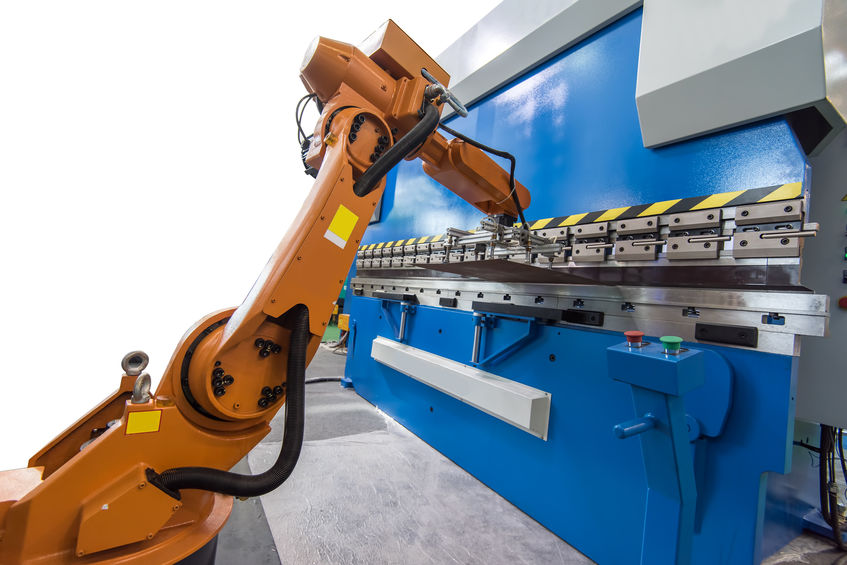
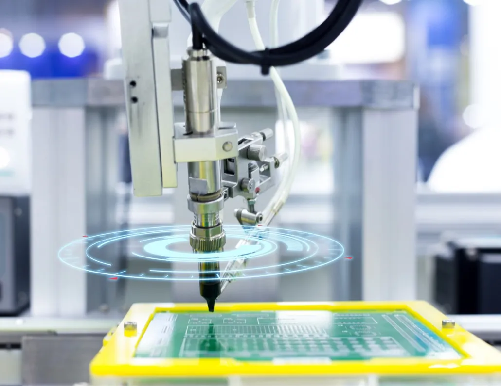
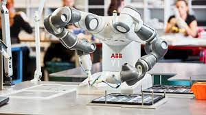

Aliança com a tecnologia
A aliança destas diferentes áreas torna possível pensar num produto de maneira diferente, do seu design à sua manutenção. Desta forma, trata-se de um processo de integração de tecnologias

produtos inteligentes
Criação de produtos inteligentes que se adaptem às necessidades atuais dos consumidores.

Robôs coloaborativos
Outro conceito relacionado é o dos robots colaborativos. Consiste no desenvolvimento de robots especialmente desenhados para colaborar com o ser humano nas suas tarefas.